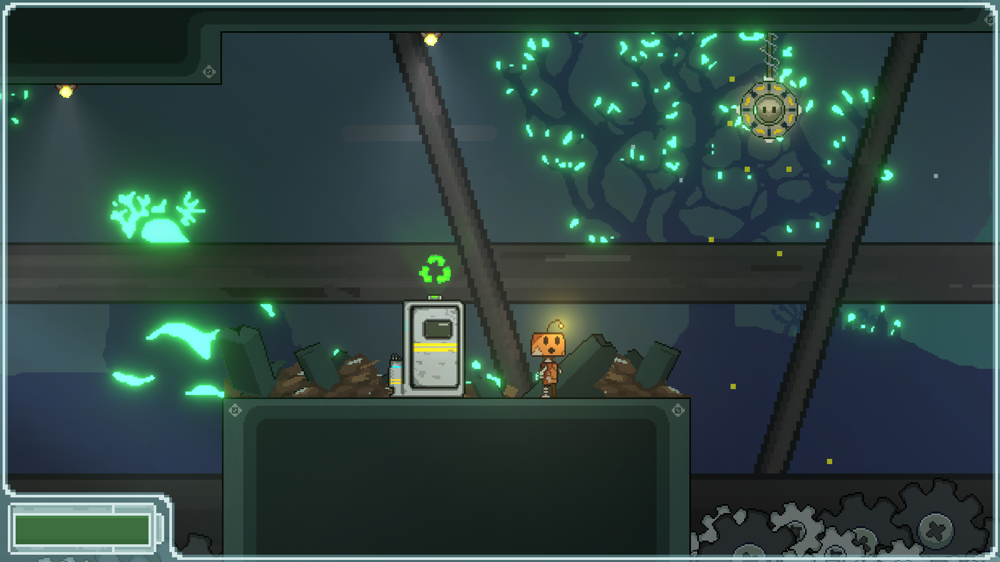
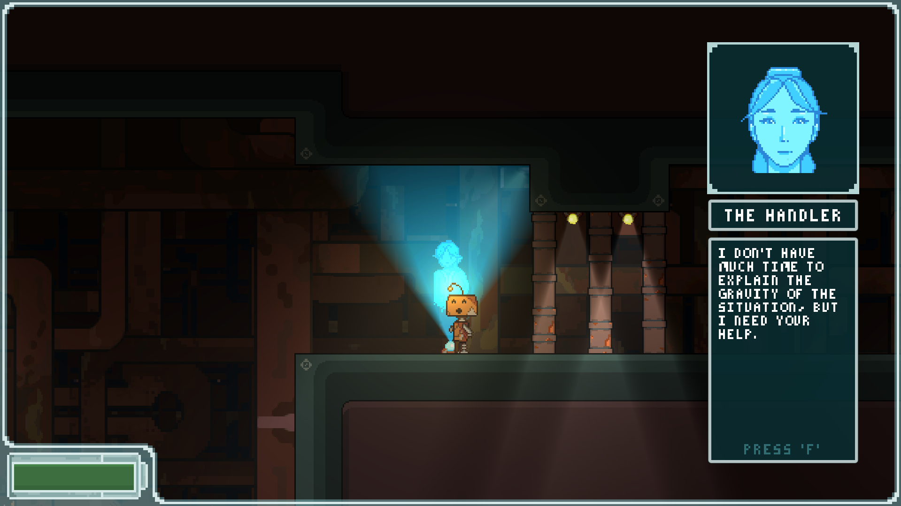

What Remains of Me
_crRrVKa4G4 What Remains of Me is a puzzle platformer game where you play as Atlas, a robot that is reactivated to find itself in an abandoned, advanced AI laboratory in the depths of the ocean. Your journey will have you upgrading your abilities to better traverse the dystopian landscape and defeat feral AI that stand in your way, all the while learning about the history of this post-apocalyptic world and the events that led to Atlas's reawakening. The project is hopefully nearing a launch on steam!
Personal contributions include a dialogue system featuring dynamic state management that impacted the game world and Ink by Inkle integration, as well as a system for background parallax.
Project Github